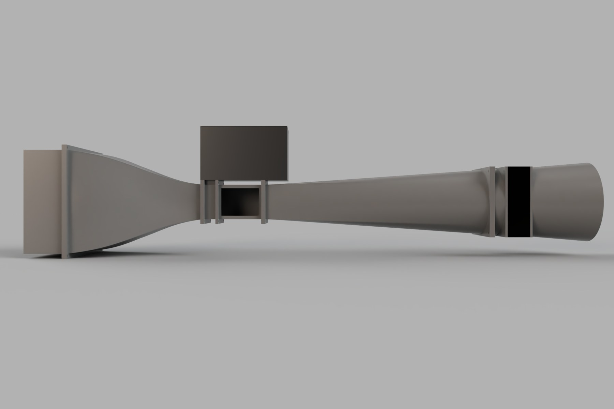
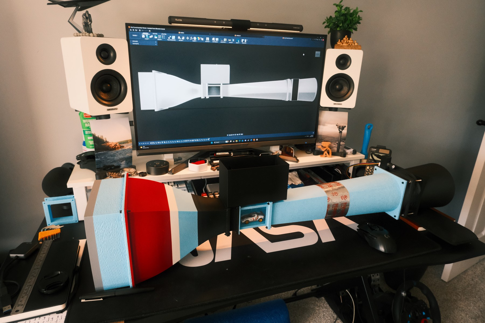
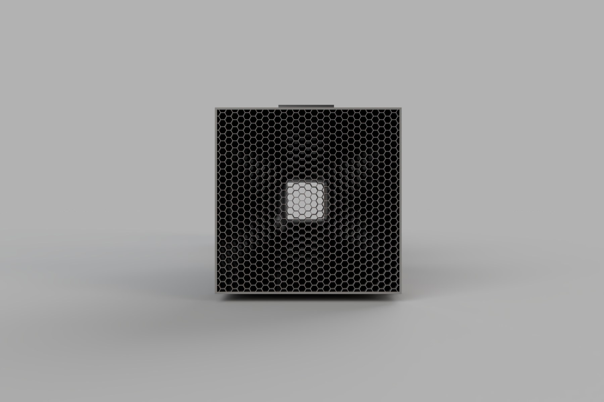
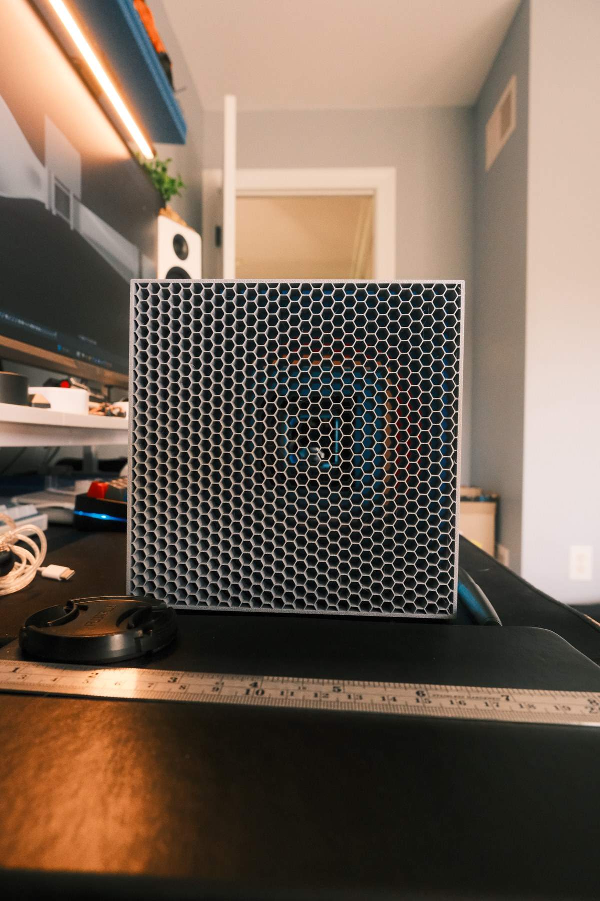
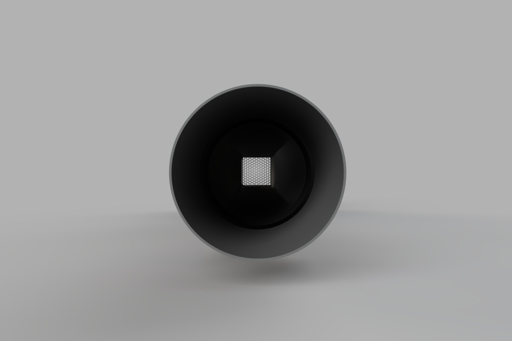
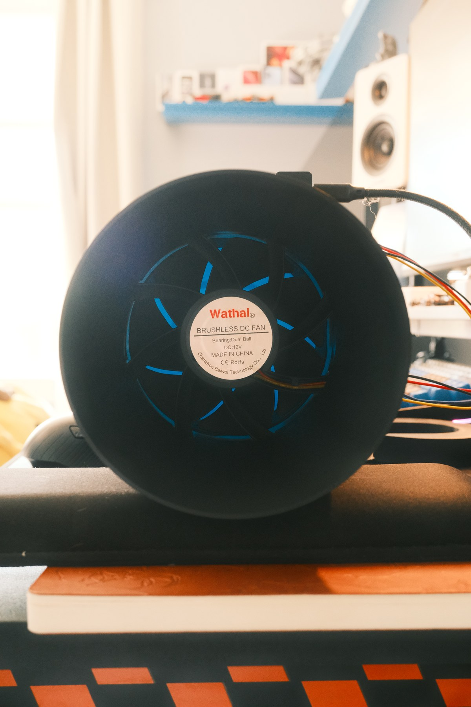
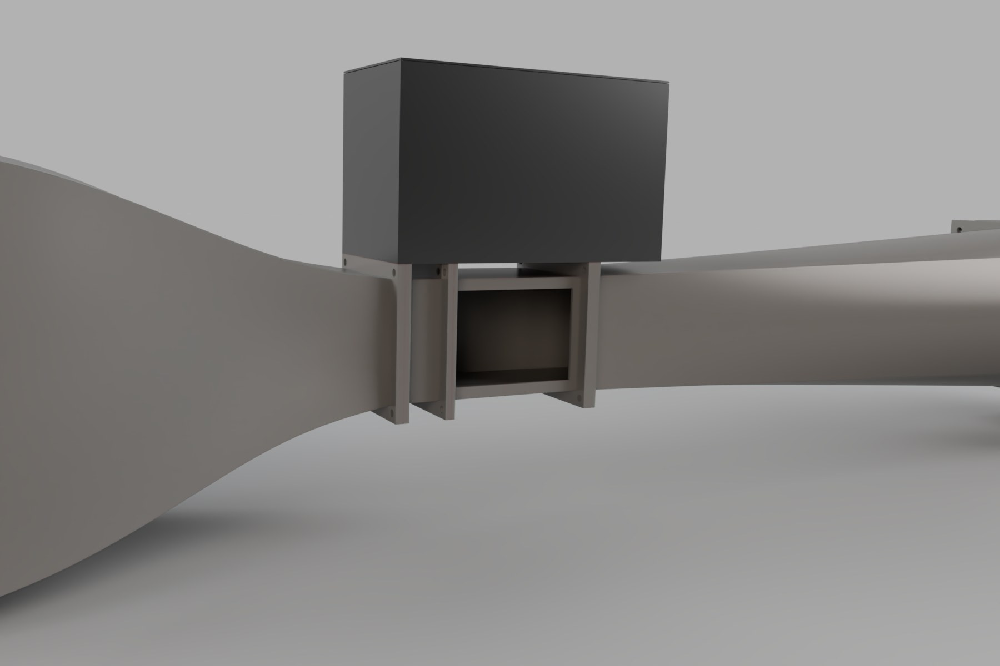
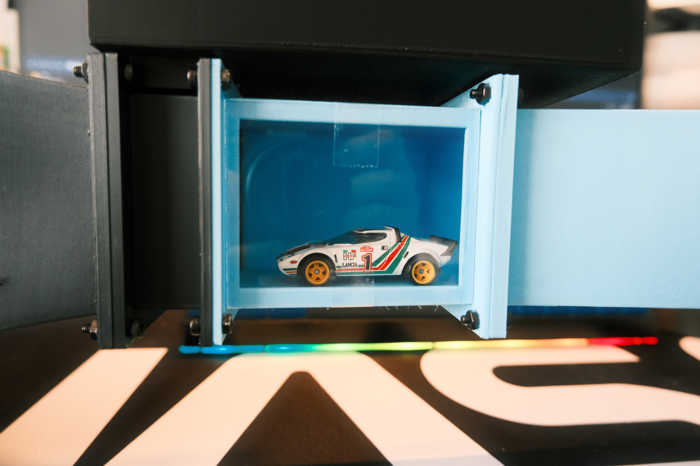

Key Topics
- Physical prototyping
- CAD-to-build comparison
- 3D-printed components
- Fan integration
- Flow-straightener geometry
A desktop wind-tunnel build with CAD-to-hardware comparisons.
A desktop wind-tunnel build shown through matched CAD views and photographs of the assembled system, flow straightener, fan section, and test-section detail.
The paired views make the transition from modeled geometry to physical hardware visible; a dedicated test-data package was not included.
Modeled geometry alongside the corresponding physical component.







